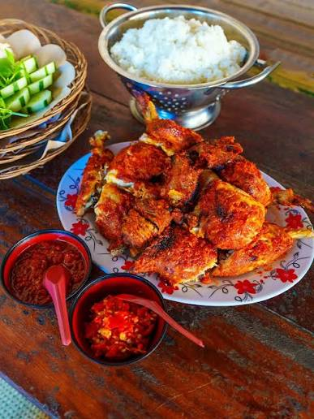
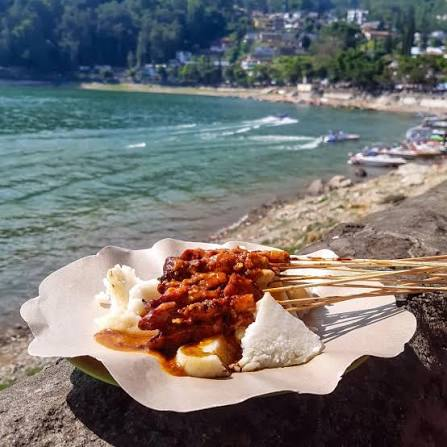
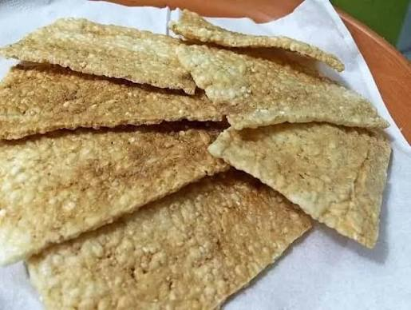

Magetan's signature culinary

Gandu Roasted Chicken
Magetan-style roasted chicken, traditionally cooked over a wood-fired stove with seasonings that penetrate deep into the meat.

Sarangan Rabbit Satay
This tender satay dish, served with a savory peanut sauce, is highly popular in the Telaga Sarangan tourist area.

Speciality Snack: Jerangking
A traditional crispy-grilled glutinous rice snack, it is a favorite souvenir from Magetan.